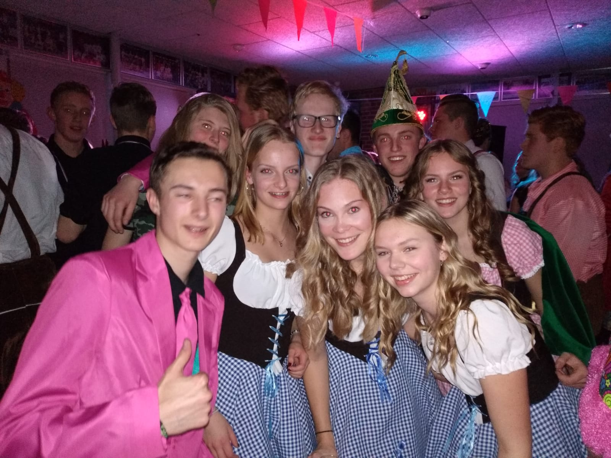
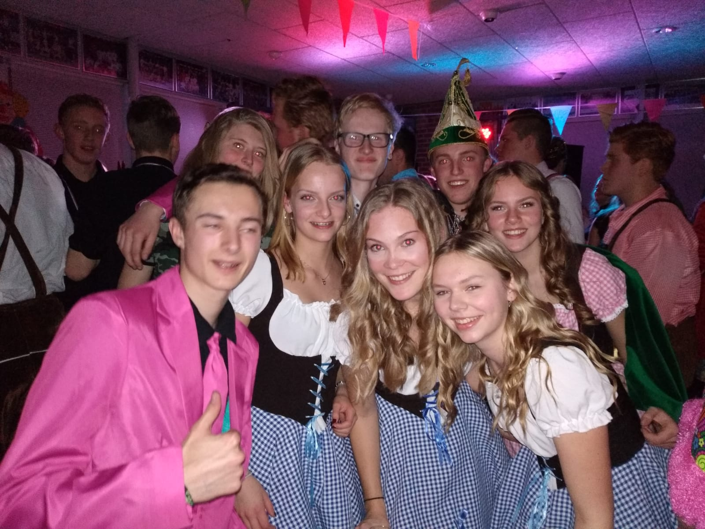

over mij
 

vrienden
ik probeer zo vaak mogelijk met mijn vrienden te kunnen afspreken omdat mijn sociaal leven erg belanrijk is voor mij. dingen die ik graag met mijn vriende zijn, lekker chillen bij elkaar gewoon een film kijken, lekker online gamen met z'n alle en ergens heen gaan zo als een pretpark of op vakantie gaan met "the boys" mijn beste vriende komen ook van uit scouting dit is erg leuk want zo heb je eens in de week altijd contact met elkaar.
scouting
scouting is op een vrijdag van 20.00-22.00 maar als wij het zouden willen mogen wij blijven tot dat de begelijding zecht dat hun naar huis gaan, want dan moet het club huis op slot. scouting is voor mij een groot deel in het leven, dit komt omdat ik veel van mijn vriende via scouting heb leren kennen. samen met mijn vrienden van scouting ga ik ook om buitens scouting. op scouting doen wij allemaal verschillende dingen zo als: hout hakken, vuur maken,speletjes spelen en ook gaan we soms nog op een kamp. de scouting waar ik bij hoor heeft 6 à 7 kampen door het hele jaar versprijd, een paar van die kampen zijn: herfst kamp, paroba en nog een paar. het leusket kamp is naar mijn ogen zomerkamp, omdat dit kamp het langst duurt en we mogen ook naar het buitenland met dit kamp. op zomerkamp doe van alles en nog wat, zo lang wij als de rowans (leeftijds groep naam) het allemaal maar gergeld hebben.scouting
gamen